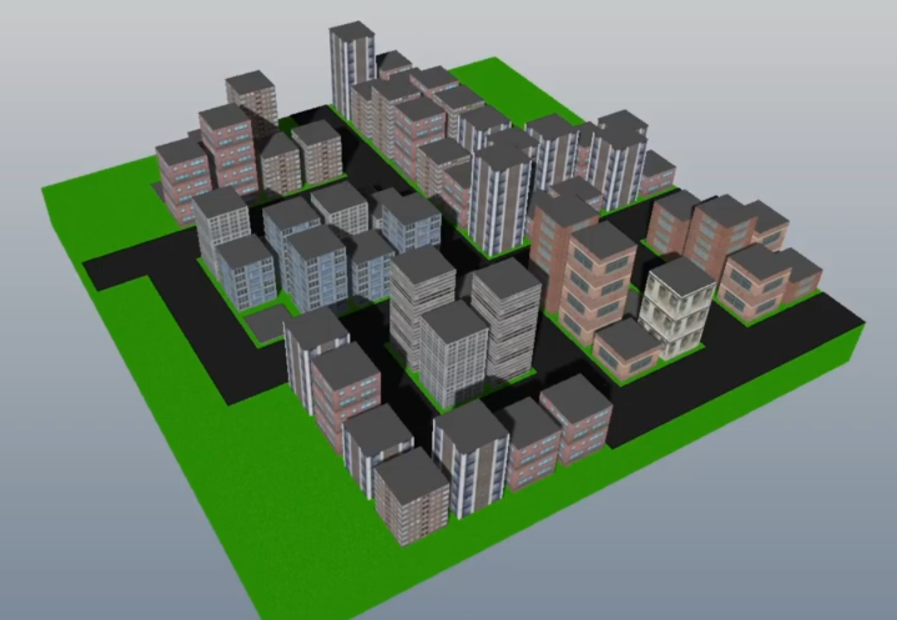
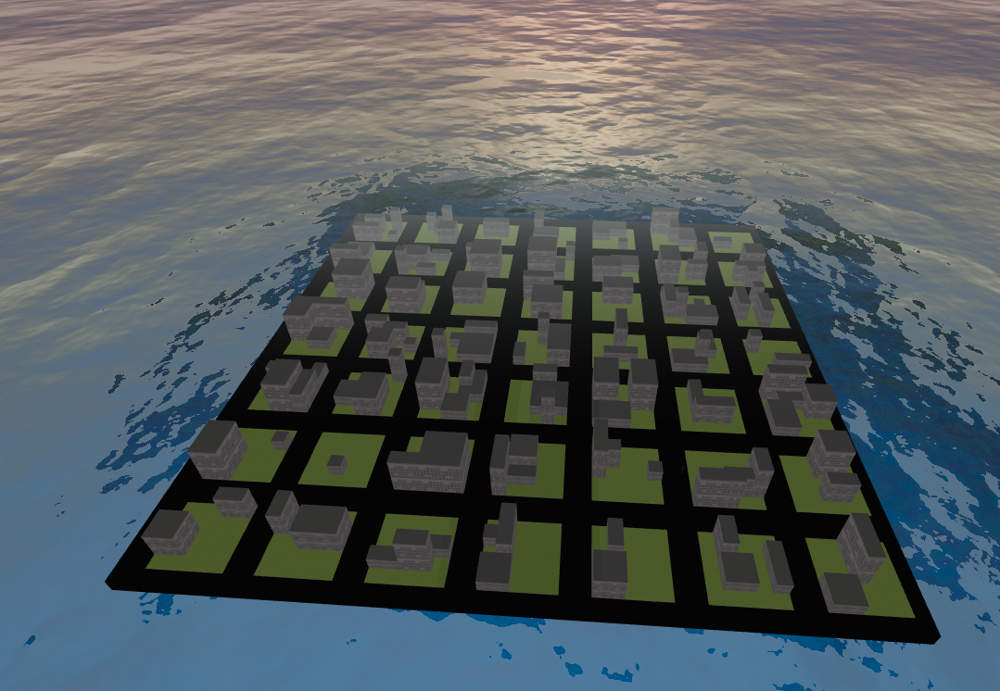
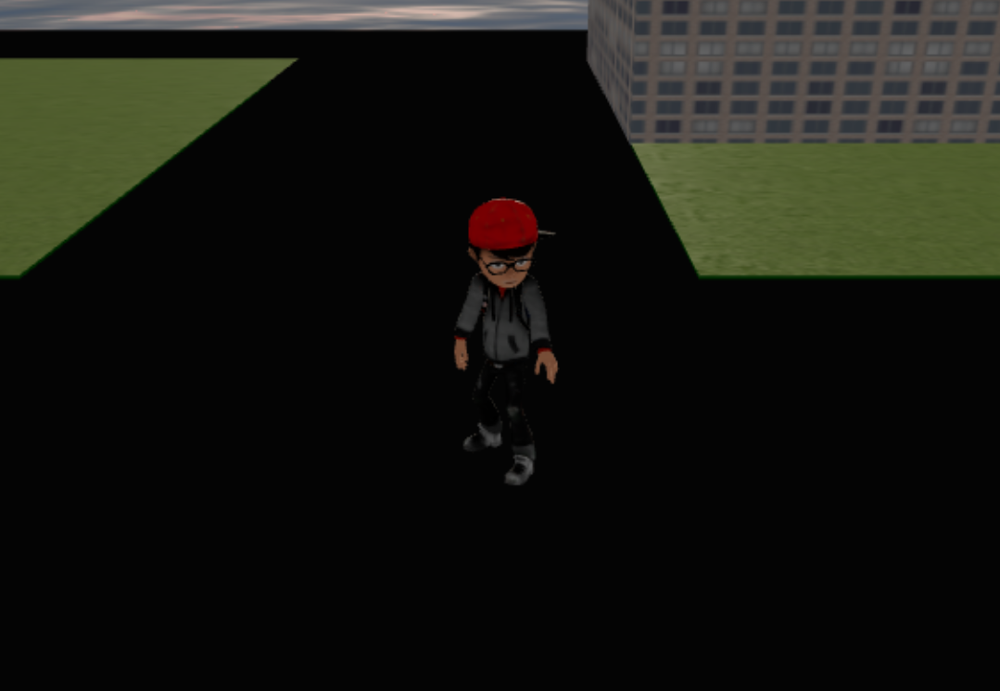
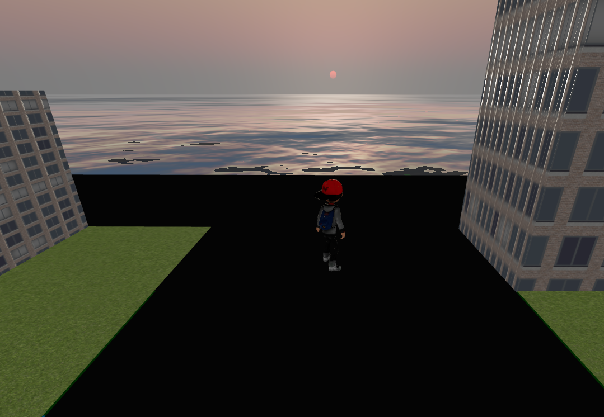

This project is a procedural city built using Three.js. It generates a grid-based environment with buildings, roads, and a third-person controllable character. Environmental effects include fog, water, and a dynamic sky system.
The idea came from a “Build simCIty with THREE.js” tutorial on YouTube. Click here to visit the playlist

The city is generated using a 2D grid data structure that defines roads and buildings. Buildings vary in size and are procedurally placed.
Concepts used:

View of the scene from the orbital camera.

Close-up of the character model.

Third-person gameplay view.